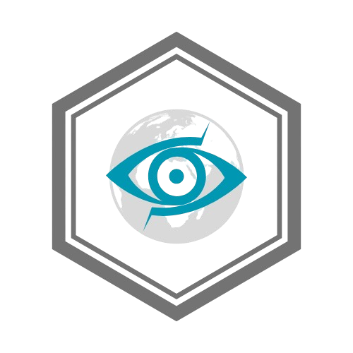

Я нашла, честно говоря, много чего интересного. Буду постепенно заливать на этот канал связи, так будет безопаснее всего. Пока что, я всё ещё занимаюсь этим, но в скором времени обещаю, будет намного больше информации. Даже, блин, не сомневайтесь в этом: я эту организацию давно уже хакнуть хотела, а утечка данных произошла только сейчас. Что ж за организация такая, спросишь ты? А это Seraphim Devision, от которой иногда мелькало только одно название. Вот её логотип внизу кстати. Подтекст немного зловещий, как по мне - всегда не любила глаза.
